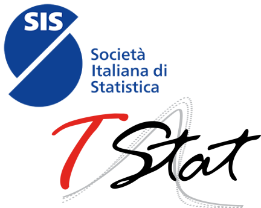

y-SIS Awards

The Best Young Contribution and Best PhD Student Contribution awards are annual honors promoted by y-SIS to recognize excellence, innovation, and scientific talent among early-career researchers in statistics.
The Best Young Contribution award, proudly sponsored by the Italian Statistical Society, is open to all young y-SIS members who author (or co-author) and present an accepted paper at the conference. The recipient is selected by a dedicated scientific committee based on research quality and impact.
The Best PhD Student Contribution award is warmly sponsored by Tstat S.r.l. and is reserved for current PhD students and recent doctoral graduates. The winner is selected directly by the y-SIS board.
Explore the past recipients and honorable mentions below to view the award-winning papers and contributions from past years!
Best Young Contribution Award
| 2026 |
Sirio Legramanti (Università di Bergamo)
Bayesian Clustering of Brain Regions with Three-Dimensional Spatial Covariates
Silvia Dallari (Università di Bologna)
Mixtures of Regularized High-Dimensional Poisson-Lognormal Distributions
(Hon. Mention)
|
| 2025 |
Angela Andreella (Università di Trento)
Blockwise Resampling for Robust Fixed Effects Inference in Linear Mixed Models
Chiara di Maria (Università di Palermo)
Causal Mediation Analysis with Spatial Interference
(Hon. Mention)
|
| 2024 |
Mirko Armillotta (Vrije Universiteit Amsterdam)
On the estimation of INAR models with Pseudo-Variance Quasi-Maximum Likelihood
Martina Amongero (Università di Torino)
A Gibbs Sampler for Community Detection in Assortative Stochastic Block Model
(Hon. Mention)
|
| 2023 |
Luca Merlo (Università Europea di Roma)
Quantile-Based Graphical Models for Continuous and Discrete Variables
Sally Paganin (Harvard University)
A Bayesian Framework for Early Cancer Screening
(Hon. Mention)
|
Best PhD Student Contribution Award
| 2026 |
Teresa Bortolotti (Politecnico di Milano)
Modeling Covariate-Dependent Variability in Functional Conformal Prediction
Giada Lo Galbo (Università di Palermo)
Testing Separability in Spatio-Temporal Functional Marked Point Processes
(Hon. Mention)
|
| 2025 |
Giulio Beltramin (Politecnico di Milano)
A Bayesian Nonparametric Approach to Multiview Clustering
|
| 2024 |
Greta Panunzi (Sapienza Università di Roma)
Species Distribution Modeling Approach for Biased Citizen Science Data
Beatrice Foroni (Università di Pisa)
Hidden Markov Graphical Models with Generalized Hyperbolic Distributions: a Financial Analysis on Commodities and Green Energy Indexes
(Hon. Mention)
|
| 2023 |
Elena Sabbioni (Politecnico di Torino)
Analyzing RNA data with scVelo: Identifiability Issues and a Bayesian Implementation
|